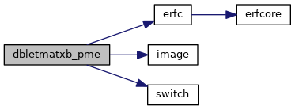
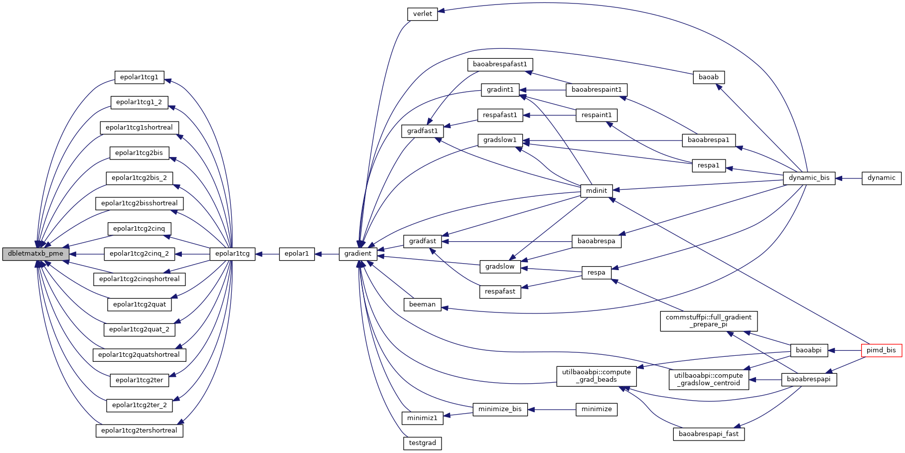
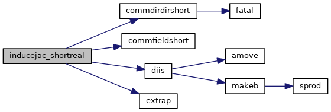
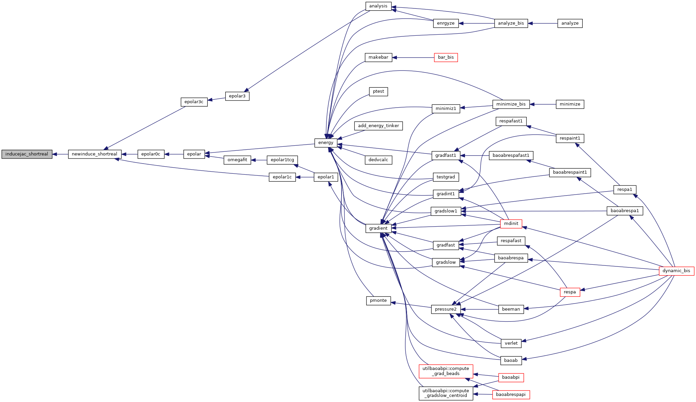
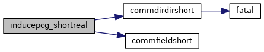
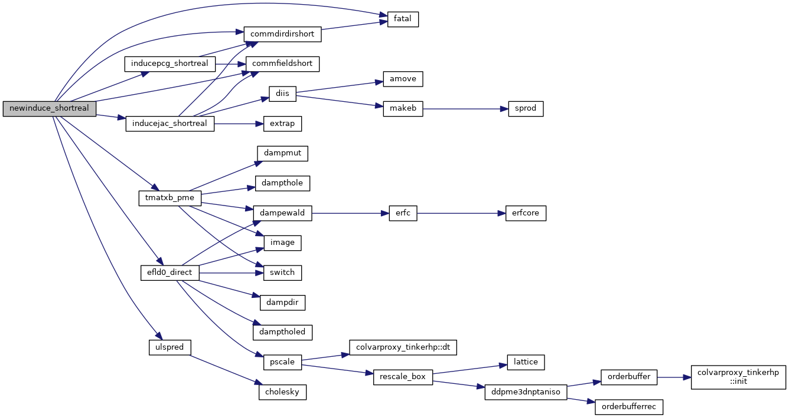
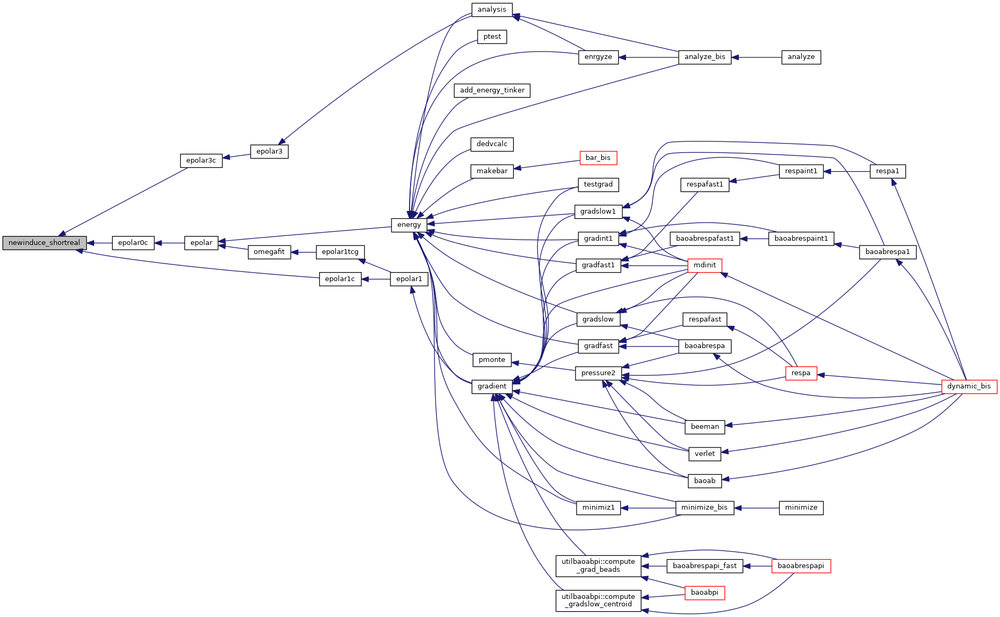

|
Tinker-HP v1.3
|
|
Tinker-HP v1.3
|
Go to the source code of this file.
Functions/Subroutines | |
| subroutine | newinduce_shortreal |
| evaluate induced dipole moments and the polarization energy using either a (preconditioned) conjugate gradient algorithm or Jacobi iterations coupled with DIIS extrapolation. More... | |
| subroutine | inducepcg_shortreal (matvec, nrhs, precnd, ef, mu) |
| Preconditioned Conjugate Gradient Solver for short range polarization. More... | |
| subroutine | inducejac_shortreal (matvec, nrhs, dodiis, ef, mu) |
| Jacobi/DIIS Solver for short range polarization. More... | |
| subroutine | dbletmatxb_pme (nrhs, dodiag, mu, mu2, efi, efi2) |
| Compute the direct space contribution to the electric field due to the current value of the induced dipoles, for two input vectors mu and mu2. More... | |
| subroutine dbletmatxb_pme | ( | integer | nrhs, |
| logical | dodiag, | ||
| real*8, dimension(3,nrhs,*) | mu, | ||
| real*8, dimension(3,nrhs,*) | mu2, | ||
| real*8, dimension(3,nrhs,npolebloc) | efi, | ||
| real*8, dimension(3,nrhs,npolebloc) | efi2 | ||
| ) |
Compute the direct space contribution to the electric field due to the current value of the induced dipoles, for two input vectors mu and mu2.
| [in] | nrhs,: | number of right hand side |
| [in] | dodiag,: | compute diagonal contribution of matrix-vector product or not |
| [in] | mu,: | first set of induced dipoles |
| [in] | mu2,: | second set of induced dipoles |
| [in] | efi,: | electrif field due to the first set of induced dipoles |
| [in] | efi2,: | electrif field due to the second set of induced dipoles |
Definition at line 652 of file newinduce_shortreal.f90.
References erfc(), image(), and switch().
Referenced by epolar1tcg1(), epolar1tcg1_2(), epolar1tcg1shortreal(), epolar1tcg2bis(), epolar1tcg2bis_2(), epolar1tcg2bisshortreal(), epolar1tcg2cinq(), epolar1tcg2cinq_2(), epolar1tcg2cinqshortreal(), epolar1tcg2quat(), epolar1tcg2quat_2(), epolar1tcg2quatshortreal(), epolar1tcg2ter(), epolar1tcg2ter_2(), and epolar1tcg2tershortreal().


| subroutine inducejac_shortreal | ( | external | matvec, |
| integer | nrhs, | ||
| logical | dodiis, | ||
| real*8, dimension(3,nrhs,*) | ef, | ||
| real*8, dimension(3,nrhs,*) | mu | ||
| ) |
Jacobi/DIIS Solver for short range polarization.
| [in] | matvec,: | matrix-vector product routine |
| [in] | nrhs,: | number of right hand side |
| [in] | dodiis,: | use of DIIS extrapolation or not |
| [in] | ef,: | permanent electric field (right hand side) |
| [in] | mu,: | induced dipoles (guess at entry) |
Definition at line 450 of file newinduce_shortreal.f90.
References commdirdirshort(), commfieldshort(), diis(), and extrap().
Referenced by newinduce_shortreal().


| subroutine inducepcg_shortreal | ( | external | matvec, |
| integer | nrhs, | ||
| logical | precnd, | ||
| real*8, dimension(3,nrhs,*) | ef, | ||
| real*8, dimension(3,nrhs,*) | mu | ||
| ) |
Preconditioned Conjugate Gradient Solver for short range polarization.
| [in] | matvec,: | matrix-vector product routine |
| [in] | nrhs,: | number of right hand side |
| [in] | precnd,: | use of diagonal preconditioner or not |
| [in] | ef,: | permanent electric field (right hand side) |
| [in] | mu,: | induced dipoles (guess at entry) |
Definition at line 202 of file newinduce_shortreal.f90.
References commdirdirshort(), and commfieldshort().
Referenced by newinduce_shortreal().

| subroutine newinduce_shortreal | ( | ) |
evaluate induced dipole moments and the polarization energy using either a (preconditioned) conjugate gradient algorithm or Jacobi iterations coupled with DIIS extrapolation.
| no | params |
Definition at line 21 of file newinduce_shortreal.f90.
References commdirdirshort(), commfieldshort(), efld0_direct(), fatal(), inducejac_shortreal(), inducepcg_shortreal(), tmatxb_pme(), and ulspred().
Referenced by epolar0c(), epolar1c(), and epolar3c().


 1.8.5
1.8.5